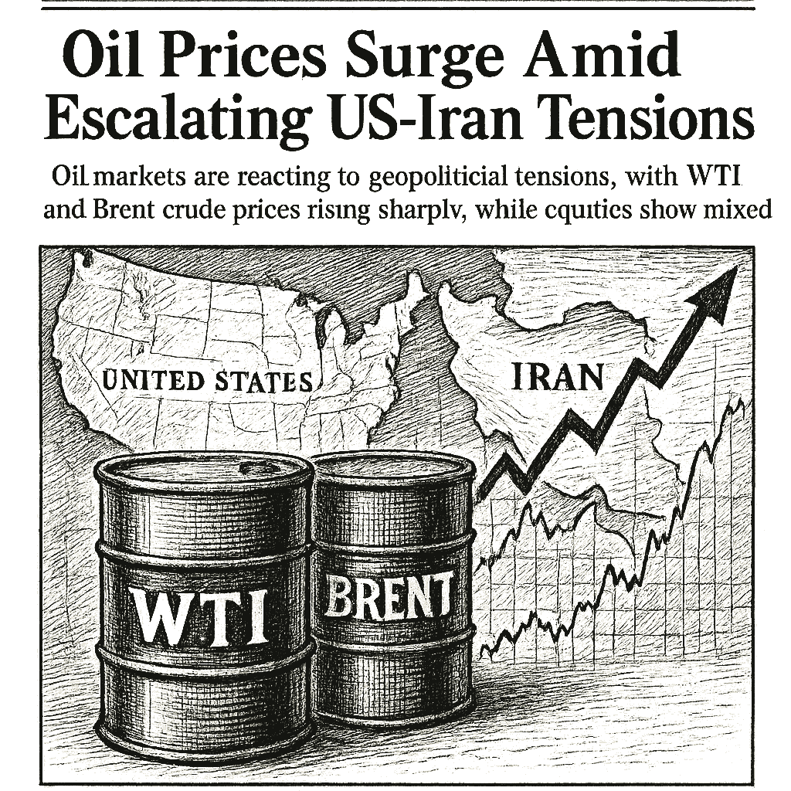

SPY
Current: $771.47Change: +2.12 (+0.28%)
Updated:
Source: yahoo_chartFreshness: fresh


Oil markets are reacting to geopolitical tensions, with WTI and Brent crude prices rising sharply, while equities show mixed performance.

Today's Headline: Oil Prices Surge Amid Escalating US-Iran Tensions
Setup: Oil markets are reacting to geopolitical tensions, with WTI and Brent crude prices rising sharply, while equities show mixed performance.
Primary Topic: Oil Prices
Specific Development: WTI and Brent crude prices are experiencing significant gains, with Brent up nearly 4% amid escalating tensions between the US and Iran.
Why Today Is Different: This surge marks the steepest weekly gain for oil since mid-July, highlighting the market's sensitivity to geopolitical risks.
Secondary Topics: Equities; Geopolitical Risks
Tone: Cautious
Sectors: Energy; Consumer Discretionary
Commodities: WTI; Brent
Countries Or Regions: United States; Iran
Macro Themes: Geopolitical Tensions; Market Volatility
Why This Story: The rise in oil prices could have broader implications for inflation and economic growth forecasts, affecting investor sentiment across sectors.
Why This Matters: Dell Technologies (DELL) Lifted Guidance, Is The AI Upside Already Priced In? is the clearest current evidence-led frame for Joshua's observation-only review; missing facts remain explicit intelligence gaps.

Summary: Global markets are reacting to rising oil prices and geopolitical tensions, with mixed performance across equities.
What Happened Overnight: Oil prices surged, with Brent up nearly 4%, while equities showed mixed results.
What Changed Materially: The significant rise in oil prices is a key development impacting market sentiment.
Which Assets Sectors Are Affected: Energy sector is positively impacted, while consumer discretionary shows weakness.
Does It Look Like Noise Or A Real Regime Input: This appears to be a real regime input due to geopolitical factors.
Why This Matters: The rise in oil prices could lead to increased inflationary pressures, influencing central bank policies and market dynamics.

AVGO Earnings Results — 2026-09-02, After Close
Consensus EPS: $3.30
Year-ago EPS: unavailable
Expected EPS growth: unavailable
Consensus revenue: $29.9B
Year-ago revenue: unavailable
Expected revenue growth: unavailable
Actual EPS: $3.32 vs $3.30 expected
Beat/Miss: $0.02 / +0.6%
Actual revenue: $29.6B vs $29.9B expected
Beat/Miss: $-358.3M / -1.2%
Expectation provenance: provider_snapshot_before_scheduled_event · Snapshot: 2026-09-02T19:49:51.722712+00:00
Source: finnhub_earnings_calendar · As of: 2026-09-04T14:15:16.767213+00:00 · Freshness: current

- WOPR learning pipeline: Collecting samples
- Candidates evaluated 24h: 0
- Current gate: Evidence
- Notification ledger events in 24h: 13
- Pending orders created/canceled/filled/expired: 3/1/0/0
- Pending lifecycle interpretation: Pending-order cancellations have trackable reasons and no obvious rapid churn pattern.
- Portfolio risk: Label: High / Score: 91.8
- Latest intelligence gap report: intelligence_gap_report_2026-08-30.pdf
Why This Matters: The active gate is Evidence, so the key question is why candidates are stopping before approval, not how to force trades.

- Sentinel role: infrastructure and operational status only.
- State: ONLINE
- Last successful validation: 2026-09-04T14:12:35.826825+00:00
- Payloads accepted/rejected: 16792/0
- Node health score: 100
Why This Matters: Sentinel is ONLINE, so Joshua should use its context only to the extent the latest accepted pulse is fresh and authenticated.

CANDIDATES MOVING THROUGH JOSHUA'S INVESTMENT-REVIEW WORKFLOW
FROZEN DAILY BRIEF SNAPSHOT | 2026-09-04T14:14:48.899819+00:00
QUEUE SUMMARY | Investment Ready: 0 | Waiting for Price: 0 | Waiting for Evidence: 2 | Research Underway: 2 | Governance Hold: 3 | Monitor Only: 0
Investment-ready status: No candidates are currently Investment Ready.
#7 AVGO - Research Underway [Moved Down 6->7]
Joshua's Thesis: Positive thesis not yet established.
Why Waiting: Research evidence is still being gathered.
Price: 355.19 now; 370.11 preferred entry
What Unlocks It: Clear valuation support; Evidence that the business quality matches the risk being taken; Independent evidence streams pointing the same way
Portfolio Fit: 26.4/100 — LOW ↓
Portfolio Fit Drivers: projected Technology exposure 49.9%; projected AI infrastructure exposure 49.9%; candidate amount $100 vs $150 currently allocated
Candidate Risk: 55.6/100 — FAIR ↑
Risk Drivers: projected Technology exposure 49.9%; projected AI infrastructure exposure 49.9%; candidate amount $100 vs $150 currently allocated
Next: Fill before expires_at while entry conditions remain valid. Owner: Columbo.
#9 DIA - Research Underway [Moved Up 12->9]
Joshua's Thesis: Positive thesis not yet established.
Why Waiting: Research evidence is still being gathered.
Price: Current price unavailable.; Preferred entry not established.
What Unlocks It: Clear valuation support; Evidence that the business quality matches the risk being taken; Independent evidence streams pointing the same way
Portfolio Fit: 61.4/100 — HIGH ↓
Portfolio Fit Drivers: projected ETF exposure 40.0%; projected Broad market exposure 40.0%; candidate amount $100 vs $150 currently allocated
Candidate Risk: 30.6/100 — LOW ↑
Risk Drivers: projected ETF exposure 40.0%; projected Broad market exposure 40.0%; candidate amount $100 vs $150 currently allocated
Next: Clear valuation support; Evidence that the business quality matches the risk being taken; Independent evidence streams pointing the same way. Owner: Columbo.
#14 PLTR - Governance Hold [Moved Down 8->14]
Joshua's Thesis: Positive thesis not yet established.
Why Waiting: Governance gate has not cleared.
Price: 176.59 now; 177.27 preferred entry
What Unlocks It: Governance gate clears; Clear valuation support; Evidence that the business quality matches the risk being taken
Portfolio Fit: 37.9/100 — LOW ↓
Portfolio Fit Drivers: projected Technology exposure 49.9%; projected AI software exposure 40.0%; candidate amount $100 vs $150 currently allocated
Candidate Risk: 44.1/100 — FAIR ↑
Risk Drivers: projected Technology exposure 49.9%; projected AI software exposure 40.0%; candidate amount $100 vs $150 currently allocated
Next: Re-evaluate after the recorded gate clears. Owner: Columbo.
#15 QBTS - Waiting for Evidence [NEW]
Joshua's Thesis: Positive thesis not yet established.
Why Waiting: Waiting for the preferred entry price.
Price: 16.58 now; 20.10 preferred entry
What Unlocks It: Clear valuation support; Evidence that the business quality matches the risk being taken; Independent evidence streams pointing the same way
Portfolio Fit: 0.0/100 — VERY LOW
Portfolio Fit Drivers: projected Unclassified exposure 70.0%; projected Unclassified exposure 70.0%; candidate amount $100 vs $150 currently allocated
Candidate Risk: 100.0/100 — VERY HIGH
Risk Drivers: projected Unclassified exposure 70.0%; projected Unclassified exposure 70.0%; candidate amount $100 vs $150 currently allocated
Next: Fill before expires_at while entry conditions remain valid. Owner: Joshua.
#20 ANGX - Governance Hold [Moved Up 21->20]
Joshua's Thesis: Positive thesis not yet established.
Why Waiting: Governance gate has not cleared.
Price: 4.54 now; 4.47 preferred entry
What Unlocks It: Governance gate clears; Clear valuation support; Evidence that the business quality matches the risk being taken
Portfolio Fit: 0.0/100 — VERY LOW
Portfolio Fit Drivers: projected Unclassified exposure 70.0%; projected Unclassified exposure 70.0%; candidate amount $100 vs $150 currently allocated
Candidate Risk: 100.0/100 — VERY HIGH
Risk Drivers: projected Unclassified exposure 70.0%; projected Unclassified exposure 70.0%; candidate amount $100 vs $150 currently allocated
Next: Re-evaluate after the recorded gate clears. Owner: Advisory Committee.
#22 UUUU - Governance Hold [NEW]
Joshua's Thesis: Positive thesis not yet established.
Why Waiting: Governance gate has not cleared.
Price: 14.55 now; 14.60 preferred entry
What Unlocks It: Governance gate clears; Clear valuation support; Evidence that the business quality matches the risk being taken
Portfolio Fit: 0.0/100 — VERY LOW
Portfolio Fit Drivers: projected Unclassified exposure 70.0%; projected Unclassified exposure 70.0%; candidate amount $100 vs $150 currently allocated
Candidate Risk: 100.0/100 — VERY HIGH
Risk Drivers: projected Unclassified exposure 70.0%; projected Unclassified exposure 70.0%; candidate amount $100 vs $150 currently allocated
Next: Re-evaluate after the recorded gate clears. Owner: Advisory Committee.
#24 IONQ - Waiting for Evidence [NEW]
Joshua's Thesis: Positive thesis not yet established.
Why Waiting: Evidence quality is insufficient.
Price: 39.31 now; 42.54 preferred entry
What Unlocks It: Clear valuation support; Evidence that the business quality matches the risk being taken; Independent evidence streams pointing the same way
Portfolio Fit: 0.0/100 — VERY LOW
Portfolio Fit Drivers: projected Unclassified exposure 70.0%; projected Unclassified exposure 70.0%; candidate amount $100 vs $150 currently allocated
Candidate Risk: 100.0/100 — VERY HIGH
Risk Drivers: projected Unclassified exposure 70.0%; projected Unclassified exposure 70.0%; candidate amount $100 vs $150 currently allocated
Next: Data confidence must reach at least 34/100. Owner: Joshua.
Since the prior Chronicle: NVDA - Removed; RCL - Removed
Observation only. This section creates no recommendation, order, authority, or execution instruction.

- If AVGO reaches the recorded price condition <= 370.11, which recorded evidence and governance requirements would still remain?
- Which recorded missing evidence item would most change Joshua's current view of DIA?
- Which recorded governance requirement must clear before PLTR can advance?
- If QBTS reaches the recorded price condition <= 20.1, which recorded evidence and governance requirements would still remain?
- What AVGO EPS or revenue result would materially change the current recorded thesis?

The surge in oil prices due to geopolitical tensions is a significant market driver, influencing investor sentiment and sector performance. The energy sector is likely to benefit, while consumer discretionary may face headwinds. Monitoring these developments is crucial for portfolio adjustments.

Compared to: 2026-09-03
- Market weather: Still Balanced
- Top opportunity: Still DELL
- Joshua gate: Still Evidence
- 2Y Treasury.last_price: 4.34 -> 4.34 (unchanged); 2Y Treasury.last_price changed 0.00% versus the prior frozen Chronicle snapshot.
- 2Y Treasury.percent_change: -1.1389521640091078 -> -1.1389521640091078 (unchanged); 2Y Treasury.percent_change changed 0.00% versus the prior frozen Chronicle snapshot.
- 10Y Treasury.last_price: 4.77 -> 4.77 (unchanged); 10Y Treasury.last_price changed 0.00% versus the prior frozen Chronicle snapshot.
- 10Y Treasury.percent_change: -0.41753653444677374 -> -0.41753653444677374 (unchanged); 10Y Treasury.percent_change changed 0.00% versus the prior frozen Chronicle snapshot.
- 30Y Treasury.last_price: 5.25 -> 5.25 (unchanged); 30Y Treasury.last_price changed 0.00% versus the prior frozen Chronicle snapshot.
- 30Y Treasury.percent_change: -0.37950664136621587 -> -0.37950664136621587 (unchanged); 30Y Treasury.percent_change changed 0.00% versus the prior frozen Chronicle snapshot.
- SPY.last_price: 771.945 -> 771.47 (down); SPY.last_price changed 0.06% versus the prior frozen Chronicle snapshot.
- SPY.percent_change: 0.33729771885358123 -> 0.2755572886202644 (down); SPY.percent_change changed 18.30% versus the prior frozen Chronicle snapshot.
- QQQ.last_price: 721.26 -> 720.695 (down); QQQ.last_price changed 0.08% versus the prior frozen Chronicle snapshot.
- QQQ.percent_change: 0.6741761232779255 -> 0.5953128707619866 (down); QQQ.percent_change changed 11.70% versus the prior frozen Chronicle snapshot.
- IWM.last_price: 294.83 -> 295.25 (up); IWM.last_price changed 0.14% versus the prior frozen Chronicle snapshot.
- IWM.percent_change: -0.31107354184277797 -> -0.16906170752324598 (up); IWM.percent_change changed 45.65% versus the prior frozen Chronicle snapshot.

The sharp rise in oil prices due to geopolitical tensions is a critical factor that could influence market dynamics.
No new warnings; however, the geopolitical landscape remains volatile.
Portfolio Construction Review
Current allocation: 150.29 allocated.
Largest sector: Unclassified at 50.1%.
Largest theme: Unclassified at 50.1%.
Diversification: Mixed (49.9).
Cash allocation: 85.0% unallocated.
Recommended exposure: DELL at portfolio-fit score 26.4.
Portfolio fit: DELL has strong standalone evidence, but it increases portfolio concentration.
Why This Matters: Portfolio Manager evaluates whether an opportunity improves this portfolio; it does not select the investment, vote, or authorize execution.

Consider the implications of rising oil prices on inflation and economic growth forecasts.

| Can trigger trade | no |
| Can modify trade rules | no |
| Can add watch items | yes |
| Can add review questions | yes |
| Can adjust confidence notes | yes |
| Input policy | external_intelligence_plus_sanitized_internal_observations |
| External policy | The Editor-in-Chief synthesizes current world/market context where available and labels unknowns; provider/model provenance remains separate. |
| Internal policy | Joshua/WOPR/Sentinel facts are supplied as sanitized observation-only summaries. |
| Editorial model | gpt-4o-mini |
- Selected by a deterministic daily rotation through symbols already present in the persisted Chronicle snapshot.
- Next earnings: September 2, 2026 (after close); status: post_event.
- Source: finnhub_earnings_calendar.
- Related event on the canonical wire: AVGO Q2 Deep Dive: AI Semiconductor Surge Faces Supply Headwinds and Guidance Caution
- Brent oil price above $96 per barrel after Iran fires missiles at Kuwait
- Desk: commodity; source: CNBC; linked symbols: none recorded.
- Published: 9/3/26 06:40 MST.
- High-impact watch: Quarterly Financial Report--Retail Trade - 9/8/26 07:00 MST.
- Affected assets: US equities, Treasuries, USD; source: census_release_schedule.
- DELL earnings: September 1, 2026, after close.
- AVGO earnings: September 2, 2026, after close.
- DELL earnings: September 3, 2026, time unknown.
- Energy: 1.58% session performance; source: persisted sector ledger.
- Technology: 1.08% session performance; source: persisted sector ledger.
- Utilities: 0.74% session performance; source: persisted sector ledger.
- GOLD: 0.86% recorded move; price: 4469.4.
- Session: open; catalyst status: no_verified_catalyst; source: yahoo_chart.
- Oil Price Movements; why it matters: Rising oil prices can impact inflation and economic growth forecasts.
- State: narrow_leadership; score: 48.90/100; advance/decline ratio: 1.09.
- Above 50-day average: 59.70%; sample: 119; provider: sentinel_sampled_breadth.
- Decision outcomes evaluated: 16; currently untestable: 0.
- Warning review: still watching 1, unknown 3; confidence calibration: insufficient_sample.
- Current macro regime: narrow_mega_cap_risk_on; change probability: unavailable.
- Risk dashboard: neutral (50/100); breadth: narrow_leadership; sentiment: neutral.
- Scenario board only - a current-state observation, not a forecast or execution instruction.

- Produced a celebrated record managing Fidelity Magellan and taught generations of individuals how to research understandable growth companies.
- Published quotation: "The person that turns over the most rocks wins the game."
- Published framework: Start with companies you can understand, then verify the story through earnings, balance-sheet strength, valuation, competitive position, and a clearly stated reason the opportunity may be mispriced.
- Committee lens: Lynch asks Joshua for a plain-language company story and the fundamental evidence behind it, connecting real-world observation to valuation rather than to hype.
- Public philosophy profile only; no participation, endorsement, or current recommendation is implied.
- If QBTS reaches the recorded price condition <= 20.1, which recorded evidence and governance requirements would still remain?
- Define evidence that would confirm or retire each unresolved warning before the next review window.
- If AVGO reaches the recorded price condition <= 370.11, which recorded evidence and governance requirements would still remain?
- Which recorded missing evidence item would most change Joshua's current view of DIA?
- Which recorded governance requirement must clear before PLTR can advance?
- If QBTS reaches the recorded price condition <= 20.1, which recorded evidence and governance requirements would still remain?
- Proposed review: Geopolitical Developments; why it matters: Escalating tensions could lead to increased market volatility.
- Proposed review: Equity Performance; why it matters: Mixed performance in equities could signal sector rotation.
- Canonical instruments reviewed: 24; delayed 6, fresh 18.
- Leading sources: yahoo_chart (21), treasury_official_yield_curve (3).
- Snapshot recorded: 9/4/26 07:15 MST.
Oil Prices Surge Amid Escalating US-Iran Tensions
Storm meter: Balanced
#7 AVGO - Research Underway [Moved Down 6->7]
Observation mode: observation_only
Watch: Oil Price Movements; why it matters: Rising oil prices can impact inflation and economic growth forecasts.
Question: If AVGO reaches the recorded price condition <= 370.11, which recorded evidence and governance requirements would still remain?